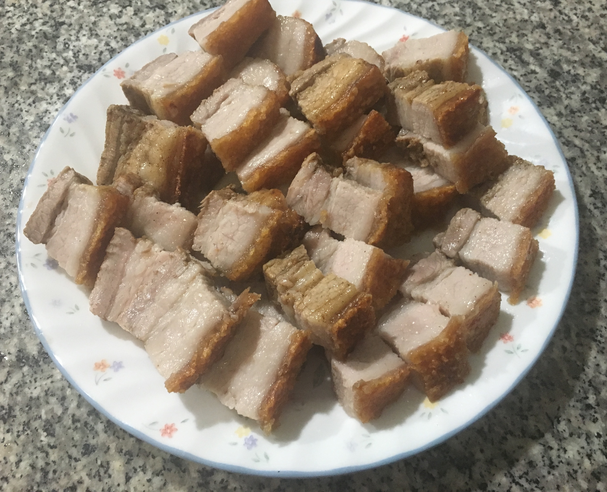
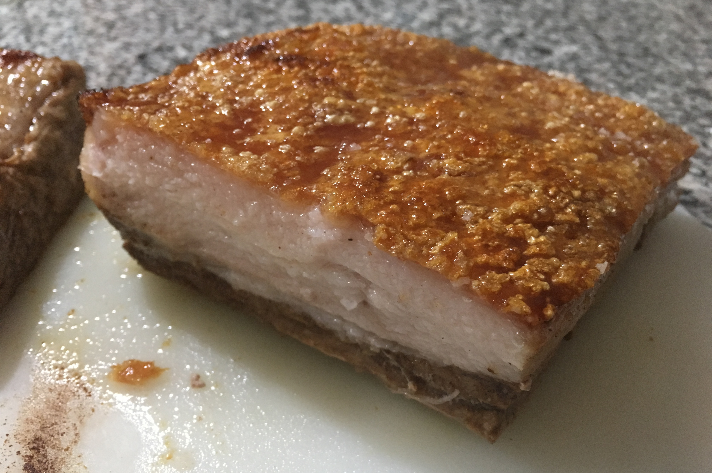

| Other | Meat | Veggie | Fruit |
|---|---|---|---|
| baking soda | pork belly | ||
| coarse salt | |||
| five spice powder | |||
| salt | |||
| shaoxing wine | |||
| sugar | |||
| vinegar |
| instructions |
|---|
| Blanche meat, then dump liquid and thoroughly rinse to remove impurities |
| Fully dry pork belly |
| Cut incisions into the pork lean side |
| Marinate pork belly meat with mixture of 1 tbsp shaoxing wine, 1 tsp five spice powder, 1 tsp salt, 1 tsp sugar |
| Tightly seal pork with aluminum foil, leaving the skin open |
| Poke holes into pork belly skin |
| Marinate pork belly skin with 1 tbsp vinegar, 1 tsp salt, and a pinch of baking soda |
| Place in fridge (uncovered) overnight |
| Mix coarse salt with a little water, fully cover skin with mixture |
| Bake for 40 min at 425F |
| Remove salt cover and stab skin again |
| Broil on high for 20 min |
| Remove from oven right away to maintain crispiness |
| Rest for 15 min and cut into pieces |